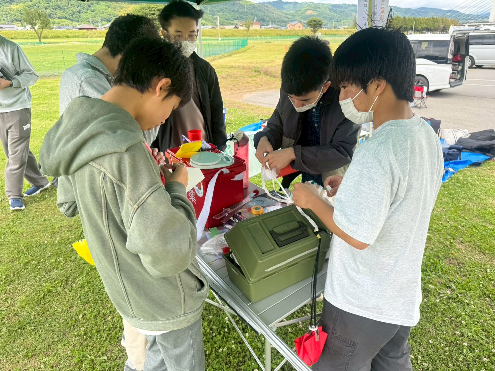
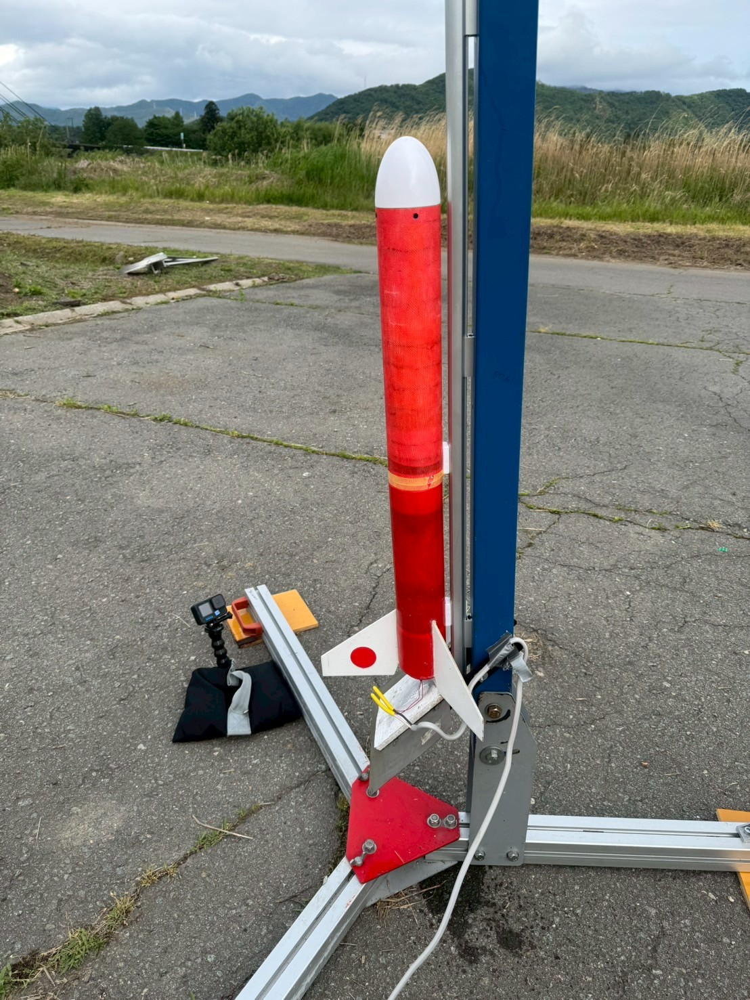
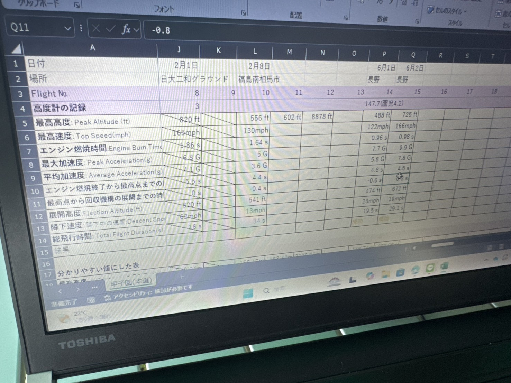
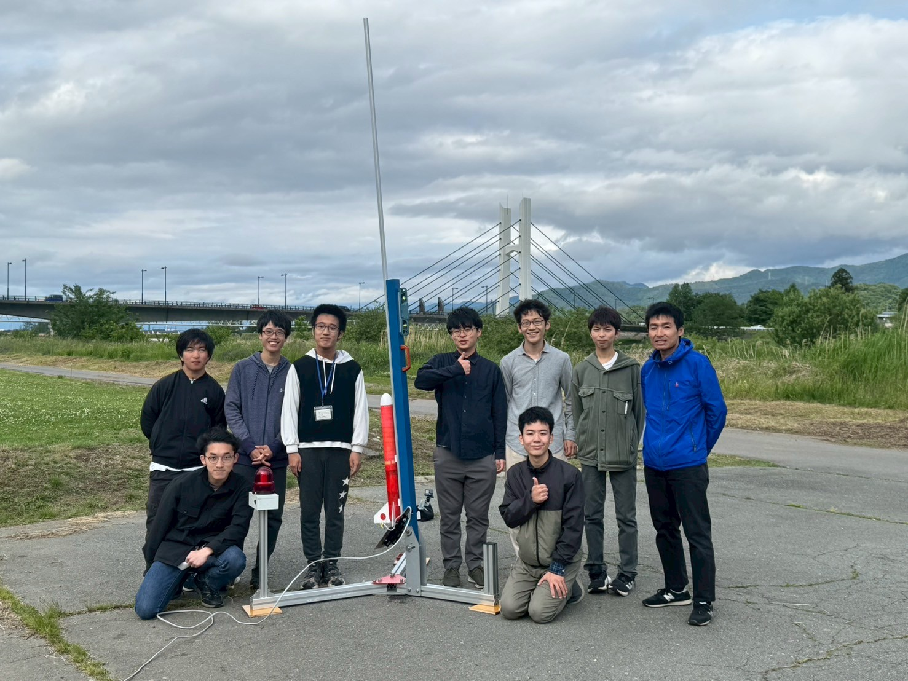

世界大会に向けてロケット打ち上げを行いました！ in 長野
最終更新：2025/6/5 投稿：2025/6/5
① はじめに
6月1日(日)に、私たち物理研究会ロケット班は、長野県千曲市の千曲緑地にてロケットの打ち上げ実験を行いました。今回の目的は、6月にフランス・パリで開催されるロケットの世界大会（IRC）に向けて本番と同じ設計・エンジンを使用し、機体のフライトデータを集めると同時に、新たな課題を見つけることを目指しました。
私たち部員8名と引率の先生、そして技術指導と場所の提供をしてくださった方々5名の合計14名。多くの方々の支えがあって実現できた、とても貴重な打ち上げになりました。
この日はさまざまな条件の下で合計6回打ち上げしました。
② 準備の様子
当日は3時間前から現地に集合し、テントの設営や立ち入り禁止エリアのロープ張り、安全確認などを行いました。風が強くて少し不安もありましたが、時間通りに準備を整えることができました。本部テントでは、重量の確認、重心の調整、シミュレーションのチェックなどを行いました。

《写真》準備所の様子
今回は条件の異なる4種類のロケットを用意しました。世界大会の規定に適合させるために、フィン（羽根）の大きさや形状を調整し、より高い安定性が出るように工夫しました。《写真》準備所の様子
機体には高度計を搭載して飛行中のデータを記録しました。今回はAltimeter Threeという新しい高度計を使用しました。それによって、より正確に、詳細な分析ができるようになりました。
③ 打ち上げの様子
打ち上げ当日の天候は「曇り」。そして何より悩まされたのが「風」でした。実は、前日まで低気圧が通過していて、その影響で当日の風速は予報でなんと10m/sでした。現地でも常に強風が吹いていて、正直「本当に打ち上げられるのか…？」と不安になるほどでした。風が強いと、打ち上げ後にロケットが流されてコースを逸れたり、最悪の場合パラシュートが開いた後に機体ごと遠くに飛ばされ、木に引っかかって回収できなくなるというリスクもあります。そのため、風の様子を見ながら慎重にタイミングを見計らって打ち上げる必要がありました。
それでも、なんとか6回の打ち上げは全て成功！ 風の影響で軌道がやや流された機体もありましたが、安全を最優先にしつつ、有意義なデータがしっかりと収集できました。

《写真》今回の機体
《写真》今回の機体
④ 結果
| 回数 | 高度 (ft) | 滞空時間 (s) | 飛行姿勢 |
|---|---|---|---|
| 1回目 | 488 | 19.5 | ◯ |
| 2回目 | 725 | 29.1 | ◯ |
| 3回目 | 772 | 30.9 | ◯ |
| 4回目 | ― | ― | △ |
| 5回目 | 683 | 28.1 | △ |
| 6回目 | 432 | 20.9 | ◯ |
1回目のフライトでは、安全確認を目的としてパワーの弱いエンジンを使用しました。機体の飛行は安定していて、パラシュートの流され方も確認できたので、次から本番用エンジンでの打ち上げに切り替えました。
2回目からは本番用のエンジンを使用。まっすぐ飛行し、航空法の上限高度（約250m）を超えないことを念頭に置いて打ち上げをしました。やや高度が足りなかったため、機体のおもりの重さを調整する必要があると分かりました。
3回目のフライトは、今回最も良い結果が得られたものです。おもりの重さを調整して、目標高度（765ft）との差わずか7ft（約1%未満）という高精度の飛行に成功しました。
《動画》打ち上げ映像
5回目は、発射直後から機体が斜めに飛行しました。これで2回連続の姿勢不良だったので、全員でななめに飛んでしまった原因について話し合いました。
6回目は再びパワーの弱いエンジンを用い、パラシュート落下時間のデータを取りました。

フライト結果のまとめ
今回の飛行実験では、機体の飛行姿勢・パラシュートの挙動・目標高度への到達精度などを検証しました。目標高度に近い打ち上げ成果が得られた一方で、飛行姿勢が安定しないといった課題も明らかになりました
機体が川に落ちて回収できないといったトラブルも発生しましたが、怪我や事故なく安全に打ち上げができました。
斜めに蛇行してしまった原因を解明して、次の打ち上げまでに改善したいです。

これはなんと、日本で2番目に高い北岳の3,193mよりも高いです！
次は富士山を越えることを目指します！
⑤ 今後の予定
次回は、6/7(土)に千葉工業大学での打ち上げを予定しています。おそらく、この打ち上げが本番前ラストの打ち上げになります。今回の打ち上げをふまえて、次の打ち上げまでに課題を見つけ、さらに改良した機体を作っていきます。
⑥ さいごに
今回の打ち上げを無事に実施できたのは、お手伝いに来てくださった皆さまの多大なご協力のおかげです。初対面の高校生のために、貴重なお時間をまる1日割いていただき、テントの設営から、打ち上げ、そして片付けまで全面的に支援していただきました。さらに、技術的なアドバイスもいただきました。本当にありがとうございました。
この日の打ち上げの様子は、NHKおよびテレビ東京にて放送予定です！番組の詳細が分かり次第、SNS等でご案内いたしますので、ぜひご覧ください。
世界大会まで残された時間は短いですが、ひとつずつ課題を解決し、できるだけのことをやって、悔いのない打ち上げができるようにがんばっていきます！応援してくださる皆さま、引き続きよろしくお願いいたします！
